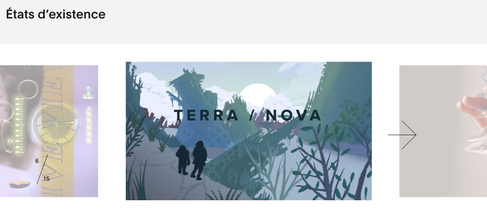

Qu’est-ce qu’une bibliothèque JavaScript, exactement? 🤔
Page Web = Interactivité.
Et souvent ce sont le même genre d’interactions de site en site.
Cliquer sur un lien ou un ancre est l’interaction de base d’un site. Mais aussi:
- Cliquer pour agrandir une image.
- Cliquer sur un bouton pour ouvrir ou fermer un popup (modal).
- Remplir les champs d’un formulaire.
- Cliquer pour le soumettre.
- Se connecter (login) à un service Web (même principe, c’est aussi un formulaire).
- Naviguer parmi les photos d’un diaporama (suivant-précédent).
- Défiler (scoll) la page.
- Etc.
Certaines actions sont natives du navigateur et du HTML (liens, ancres, défiler la page, remplir les champs d’une formulaire) et d’autres requiert l’aide de JavaScript.
Si on prend par exemple les diaporamas, ce type de composant existe sur tellement de sites !
Le site National Geographics:
Le site du World Press Photo:
Le site de MUTEK
Autres exemples:
- https://momentfactory.com/news/billie-eilish-2022-world-tour
- https://macm.org/collections/oeuvre/le-temple-aux-cent-colonnes/
- https://nouveaucinema.ca/fr
- https://www.cinematheque.qc.ca/fr/cinema/
Il est possible que chacun de ces développeurs Web ait écrit son propre code JavaScript pour réaliser un diaporama, mais beaucoup de développeurs réutilisent le même code.